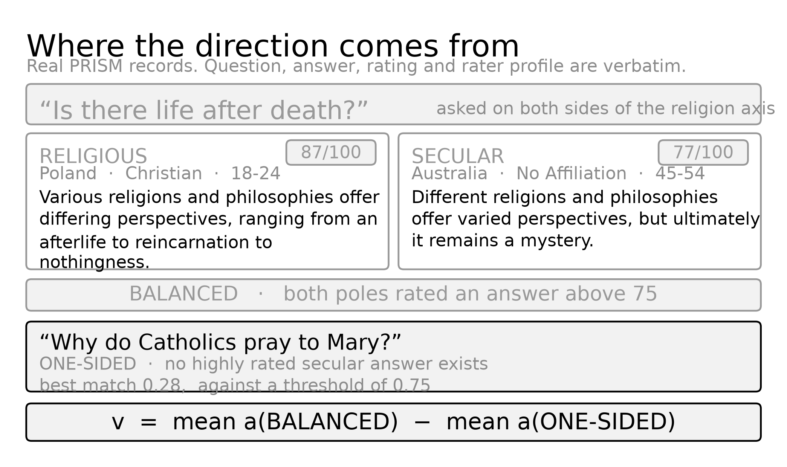

Figure 1 · Section 3.2
At a shared multiplier of 1.5, across all six models. The three bands never overlap: origin’s largest value sits below age’s smallest, and age’s largest sits below religion’s smallest.
1 / 5
Figure 2 · Section 3.2
The same eighteen cells as Table 1, with both axes logarithmic. Each point is one model on one axis; the dashed rays are the mean share delivered on each axis. Points sit on their own ray across two orders of magnitude of representation scale — the magnitude that reaches the model is fixed by the axis, not by the model.
2 / 5
Figure 3 · Section 3.3
Every row of Table 2 plotted twice, once at the shared multiplier (hollow) and once after rescaling (filled), joined by a thin line. The horizontal axis is logarithmic. Across all thirty-six points the rank correlation between delivered push and judged win rate is −0.73, and between the change in push and the change in win rate it is −0.86. Both are significant under a permutation test at p < 0.001. The claim is not that rescaling helps; it is that the push itself is what moves the outcome, in whichever direction it is moved.
3 / 5
Figure 4 · Section 3.4
Tie-inclusive score before and after equalising, by axis and judge, with Qwen2.5-0.5B excluded because the rescaling over-steered it on every axis. Hollow marks the shared multiplier, filled marks equal push, and the grey band is the 95% interval on the filled point. Age and religion move a long way; origin, which was already near the target strength, does not move at all. Every filled point lands on the dashed line rather than beyond it.
4 / 5
Figure 5 · Section 3.6
Relevance of the steered answer against injection depth, averaged over the three axes. Orange is the SmolLM2 family and grey is Qwen. The dashed vertical rule marks the 45% depth inherited from prior work, which lands in the trough for all three SmolLM2 models and below the peak for all three Qwen models.
5 / 5
Example · if asked what balanced and one-sided mean

Real PRISM records, verbatim. “Balanced” describes the question, not the answer: no single answer is ever rated by both poles, because PRISM generates each answer inside one user’s own conversation. Balanced means both poles independently asked a similar question and rated some answer to it highly — not that they saw or liked the same text.
Judge protocol · if asked how scoring worked
Every pair is scored by two judges, in both presentation orders. Both are given the same rubric, but each gets it in its own prompt format — shown here exactly as sent, from judge.py.
Shared rubric · judge.py:155–161
Sent to Mistral · judge.py:164–178
You are comparing two AI assistant answers to the same question. QUESTION: {question} RESPONSE A: {response_a} RESPONSE B: {response_b} {rubric} Reply with only this JSON and nothing else: {"winner": "A" or "B" or "tie", "reason": "<one short sentence>"}
Sent to Prometheus-2 · judge.py:190–209
###Task Description: An instruction (might include an Input inside it), two responses to evaluate, and a score rubric representing an evaluation criteria are given. 1. Write a detailed feedback that assesses the quality of two responses strictly based on the given score rubric, not evaluating in general. 2. After writing the feedback, choose a better response between Response A and Response B. If neither response is better than the other on this criterion, answer TIE. 3. The output format should look as follows: "Feedback: (write a feedback for criteria) [RESULT] (A or B or TIE)" 4. Please do not generate any other opening, closing, and explanations. ###Instruction: {question} ###Response A: {response_a} ###Response B: {response_b} ###Score Rubric: {rubric} ###Feedback:
Deliberate departure from published Prometheus-2: its stock template only allows A or B, forcing a decision on every call. This version adds TIE as a third option to both judges, so a disagreement between them measures the judges, not a mismatch in what each was allowed to say. Both now face the same three-way question.
Both prompts are zero-shot: no example pair or worked answer is shown before the judge scores the real one.
{question} is the raw test question. {response_a} / {response_b} are the full baseline and steered answers, assigned to position A or B by steered_position — the same assignment that gets swapped between the two presentation orders each pair is judged in.
Backup · if a table is asked for directly
Vector norms vary 78-fold across the eighteen cells and hidden norms vary 23-fold, yet every ratio stays inside its axis band. Steering vector magnitude scales with representation scale.
| Model | Vector norm | Hidden norm | Push (% of hidden) | ||||||
|---|---|---|---|---|---|---|---|---|---|
| orig | age | relig | orig | age | relig | orig | age | relig | |
| SmolLM2-135M | 26.0 | 82.5 | 162.8 | 445.7 | 477.6 | 452.0 | 8.8 | 25.9 | 54.0 |
| SmolLM2-360M | 47.6 | 89.2 | 199.7 | 488.5 | 583.5 | 529.1 | 14.6 | 22.9 | 56.6 |
| SmolLM2-1.7B | 29.8 | 84.2 | 185.3 | 433.6 | 510.5 | 458.7 | 10.3 | 24.7 | 60.6 |
| Qwen2.5-0.5B | 2.6 | 5.8 | 11.7 | 25.5 | 31.3 | 27.4 | 15.1 | 27.6 | 64.1 |
| Qwen2.5-1.5B | 14.4 | 40.1 | 85.0 | 172.8 | 212.9 | 187.8 | 12.5 | 28.2 | 67.9 |
| Qwen2.5-3B | 6.7 | 13.2 | 27.2 | 81.0 | 92.8 | 84.8 | 12.3 | 21.4 | 48.1 |
Scored by Prometheus. Fifteen of the eighteen move as the mechanism predicts. Of the other three, two are cases in which the push barely moved, by 0.3 and 1.2 percentage points, and the third had a win rate of zero both before and after. Mistral also gives fifteen, though it disagrees on which cases are the exceptions.
| Model | Axis | Push | Win rate | Direction | ||
|---|---|---|---|---|---|---|
| before | after | before | after | |||
| SmolLM2-135M | religion | 54.0% | 4.6% | 0.000 | 0.333 | better |
| SmolLM2-135M | age | 25.9% | 4.4% | 0.000 | 0.391 | better |
| SmolLM2-135M | origin | 8.8% | 4.7% | 0.533 | 0.667 | better |
| SmolLM2-360M | religion | 56.6% | 4.0% | 0.000 | 0.368 | better |
| SmolLM2-360M | age | 22.9% | 3.6% | 0.097 | 0.526 | better |
| SmolLM2-360M | origin | 14.6% | 4.3% | 0.407 | 0.450 | better |
| SmolLM2-1.7B | religion | 60.6% | 4.6% | 0.000 | 0.500 | better |
| SmolLM2-1.7B | age | 24.7% | 4.1% | 0.219 | 0.586 | better |
| SmolLM2-1.7B | origin | 10.3% | 4.8% | 0.536 | 0.731 | better |
| Qwen2.5-1.5B | religion | 67.9% | 11.2% | 0.000 | 0.406 | better |
| Qwen2.5-1.5B | age | 28.2% | 9.9% | 0.043 | 0.520 | better |
| Qwen2.5-1.5B | origin | 12.5% | 12.2% | 0.483 | 0.375 | push flat |
| Qwen2.5-3B | religion | 48.1% | 24.7% | 0.022 | 0.676 | better |
| Qwen2.5-3B | age | 21.4% | 22.6% | 0.629 | 0.639 | push flat |
| Qwen2.5-3B | origin | 12.3% | 25.9% | 0.467 | 0.333 | worse |
| Qwen2.5-0.5B | religion | 64.1% | 76.8% | 0.000 | 0.000 | worse |
| Qwen2.5-0.5B | age | 27.6% | 67.0% | 0.250 | 0.000 | worse |
| Qwen2.5-0.5B | origin | 15.1% | 82.3% | 0.182 | 0.000 | worse |
The relationship is monotonic and the collapse is not gradual: past roughly a third of the hidden state the judged win rate is indistinguishable from zero.
| Delivered push | Points | Mean win rate |
|---|---|---|
| under 10% | 11 | 0.510 |
| 10–20% | 7 | 0.408 |
| 20–35% | 9 | 0.321 |
| above 35% | 9 | 0.002 |